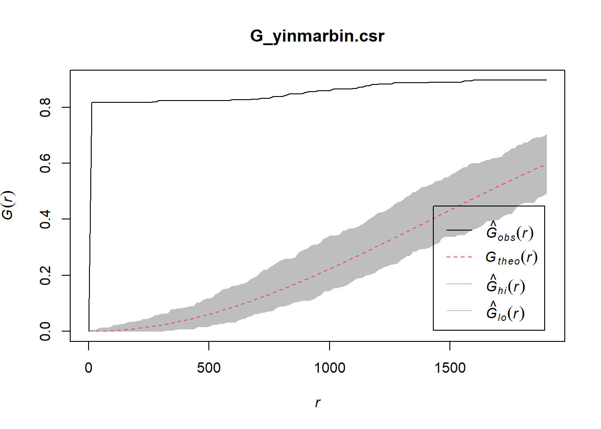
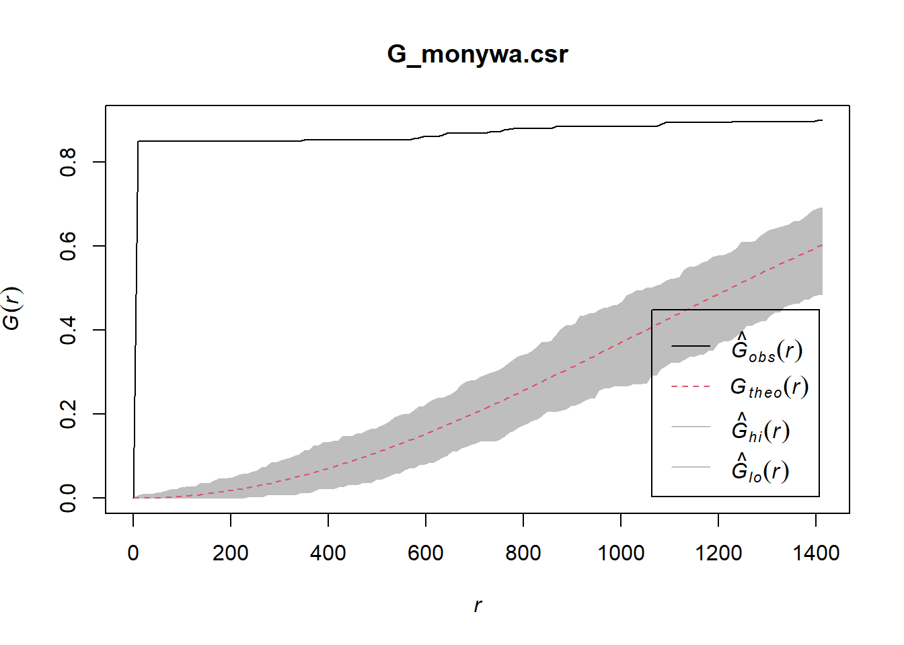
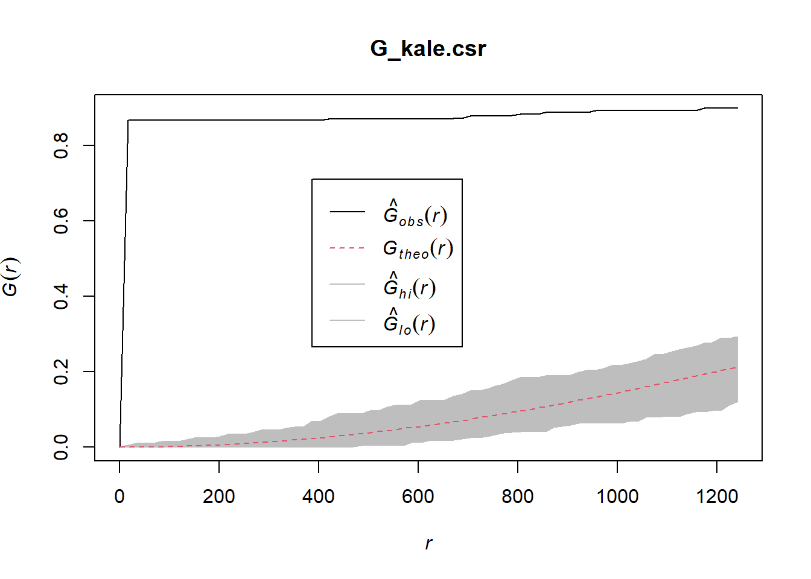
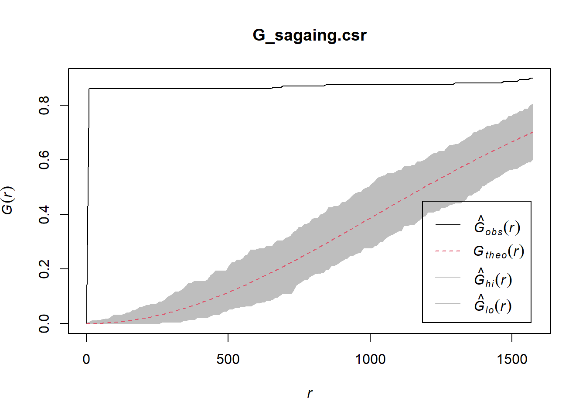
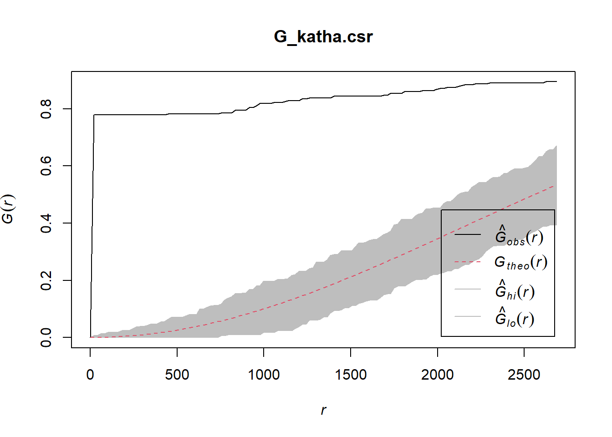
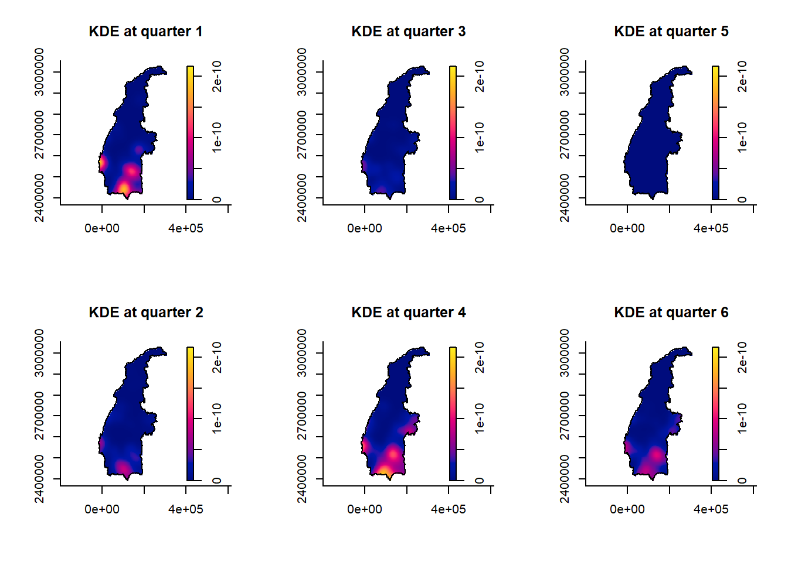

pacman::p_load(sf, raster, spatstat, sparr, tmap, tidyverse)Geospatial Analytics for Social Good: Application of Spatial and Spatio-temporal Point Patterns Analysis to discover the geographical distribution of Armed Conflict in Myanmar
Take-home Exercise 01
1.0 Overview
1.1 Context
Millions of people have their lives shattered by armed conflict – wars – every year.
Armed conflict has been on the rise since about 2012, after a decline in the 1990s and early 2000s. First came conflicts in Libya, Syria and Yemen, triggered by the 2011 Arab uprisings. Libya’s instability spilled south, helping set off a protracted crisis in the Sahel region. A fresh wave of major combat followed: the 2020 Azerbaijani-Armenian war over the Nagorno-Karabakh enclave, horrific fighting in Ethiopia’s northern Tigray region that began weeks later, the conflict prompted by the Myanmar army’s 2021 power grab and Russia’s 2022 assault on Ukraine. Add to those 2023’s devastation in Sudan and Gaza. Around the globe, more people are dying in fighting, being forced from their homes or in need of life-saving aid than in decades.
We would be zooming into the world’s longest civil war in Myanmar by using relevant spatial point patterns analysis methods to discover the spatial and spatio-temporal distribution of armed conflict in Myanmar.
1.2 Data
1.2.1 Armed Conflict Data
We would be getting Myanmar armed conflict data (2021 to June 2024) from Armed Conflict Location & Event Data (ACLED), an independent, impartial, international non-profit organization collecting data on violent conflict and protest in all countries and territories in the world.
1.2.2 GIS Data
We would get our relevant administrative boundary GIS Data from Myanmar Information Management Unit, MIMU.
2.0 Setup
In this assignment, six R packages will be used, they are:
- sf, a relatively new R package specially designed to import, manage and process vector-based geospatial data in R.
- spatstat, which has a wide range of useful functions for point pattern analysis. In this hands-on exercise, it will be used to perform 1st- and 2nd-order spatial point patterns analysis and derive kernel density estimation (KDE) layer.
- sparr provides functions to estimate fixed and adaptive kernel-smoothed spatial relative risk surfaces via the density-ratio method and perform subsequent inference. Fixed-bandwidth spatiotemporal density and relative risk estimation is also supported
- raster which reads, writes, manipulates, analyses and model of gridded spatial data (i.e. raster). In this hands-on exercise, it will be used to convert image output generate by spatstat into raster format.
- maptools which provides a set of tools for manipulating geographic data. In this hands-on exercise, we mainly use it to convert Spatial objects into ppp format of spatstat.
- tmap which provides functions for plotting cartographic quality static point patterns maps or interactive maps by using leaflet API.
The following code chunk below is used to install and launch the six R packages.
3.0 Data Wrangling
3.1 Armed Conflict Data
3.1.1 Import and prepare Myanmar Armed Conflict Data
In the code chunk below, we read the data Myanmar Armed Conflict Data and convert the data to Projected Coordinate System (CRS: 32647) from the Geographic Coordinate System, as scanning through the raw csv data. The latitude and longitude data shows that the data is following the Geographic Coordinate System and a Projected Coordinate System would be a better form of geodata for analysis in this context.
We also did some light data preparation of the data by changing the format of the date and deriving the quarter of each event.
raw_data <- read_csv("data/raw/2021-01-01-2024-06-30-Myanmar.csv") %>%
st_as_sf(coords = c(
"longitude", "latitude"),
crs=4326) %>%
st_transform(crs = 32647) %>%
mutate(event_date = dmy(event_date)) %>%
mutate(quarter = quarter(event_date)) %>%
mutate(quarter = case_when(
year == 2022 & quarter < 8 ~ quarter + 5,
year == 2023 & quarter < 4 ~ quarter + 9,
year == 2024 & quarter < 1 ~ quarter + 13,
TRUE ~ quarter
))3.1.2 Filter out fatal conflicts associated with the Military Forces of Myanmar
Since we are interested in conflicts that involves the Myanmar Military, we filter out the data with the following code chunk.
military_conflict <- raw_data %>%
filter(!is.na(actor1) & !is.na(actor2) &
grepl("Military Forces of Myanmar", actor1) | grepl("Military Forces of Myanmar", actor2))We are interested in events that led to some degree of fatal outcome, hence we further filter our data with the code below.
military_conflict <- military_conflict %>%
filter(fatalities > 0)3.2 Administrative boundary data
3.2.1 Importing the administrative boundary data
boundary = st_read(dsn = "data/raw/mmr_polbnda2_adm1_250k_mimu_1",
layer = "mmr_polbnda2_adm1_250k_mimu_1")Reading layer `mmr_polbnda2_adm1_250k_mimu_1' from data source
`C:\Users\0seah\SMU\AY24-25 T1\IS415\IS415\Take-Home_Ex\Take-Home_Ex01\data\raw\mmr_polbnda2_adm1_250k_mimu_1'
using driver `ESRI Shapefile'
Simple feature collection with 18 features and 6 fields
Geometry type: MULTIPOLYGON
Dimension: XY
Bounding box: xmin: 92.1721 ymin: 9.696844 xmax: 101.17 ymax: 28.54554
Geodetic CRS: WGS 84districts_townships = st_read(dsn = "data/raw/mmr_polbnda_adm3_250k_mimu_1",
layer = "mmr_polbnda_adm3_250k_mimu_1")Reading layer `mmr_polbnda_adm3_250k_mimu_1' from data source
`C:\Users\0seah\SMU\AY24-25 T1\IS415\IS415\Take-Home_Ex\Take-Home_Ex01\data\raw\mmr_polbnda_adm3_250k_mimu_1'
using driver `ESRI Shapefile'
Simple feature collection with 330 features and 9 fields
Geometry type: MULTIPOLYGON
Dimension: XY
Bounding box: xmin: 92.1721 ymin: 9.696844 xmax: 101.17 ymax: 28.54554
Geodetic CRS: WGS 843.2.2 Preparing Data
We transform the data to Projected Coordinate System (CRS: 32647), allowing for a consistent geodata system to be use for analysis.
boundary <- boundary %>%
st_transform(crs = 32647)
districts_townships <- districts_townships %>%
st_transform(crs = 32647)To ensure that the data can be better manipulated, we need to ensure syntax of the same variable matches.
For the code chunk below, we are changing the ST data to be consistent with the format of admin1 in the military_conflict dataframe.
boundary <- boundary %>%
mutate(ST = str_replace_all(ST, "\\(", "- ")) %>%
mutate(ST = str_remove_all(ST, "\\)"))3.3 Combining the data
Joining the attribute data and geospatial data
military_conflict_distribution <- st_join(military_conflict, boundary,
by = c("admin1" = "ST"))3.4 Filtering Data for analysis
3.4.1 Overall Distribution of fatal conflicts associated with the Military Forces of Myanmar
We plot an overall distribution of fatal conflicts associated with the Military Forces of Myanmar to get a sensing of the areas we want to focus on.
tmap_mode('plot')
tm_shape(boundary) +
tm_polygons() +
tm_shape(military_conflict_distribution) +
tm_dots()We also rank the States and Regions by the amount of fatal conflicts associated with the Military Forces of Myanmar.
unique_admin1 <- military_conflict %>%
count(admin1, name = "count") %>%
arrange(desc(count))
unique_admin1Simple feature collection with 18 features and 2 fields
Geometry type: GEOMETRY
Dimension: XY
Bounding box: xmin: -206931.7 ymin: 1103500 xmax: 562661.5 ymax: 3026505
Projected CRS: WGS 84 / UTM zone 47N
# A tibble: 18 × 3
admin1 count geometry
<chr> <int> <GEOMETRY [m]>
1 Sagaing 3375 MULTIPOINT ((-13816.45 2549666), (-13808.2 2533298), (-137…
2 Magway 1199 MULTIPOINT ((-14448.48 2310133), (-11778.42 2331424), (-11…
3 Mandalay 789 MULTIPOINT ((68129.21 2320839), (69197.66 2321843), (70095…
4 Tanintharyi 586 MULTIPOINT ((391330 1604194), (391580 1616869), (391713.2 …
5 Kayin 562 MULTIPOINT ((235185 2133257), (236815.5 2149957), (241914.…
6 Kayah 528 MULTIPOINT ((279858.3 2139472), (283918.5 2160815), (28752…
7 Chin 520 MULTIPOINT ((-156265.4 2407840), (-152350.3 2435531), (-14…
8 Shan-North 483 MULTIPOINT ((229100.8 2553686), (237609.2 2472369), (23876…
9 Kachin 420 MULTIPOINT ((195339.5 2804590), (208746.8 2822422), (21107…
10 Mon 408 MULTIPOINT ((275346.6 1937633), (276082.9 1929289), (27724…
11 Bago-East 364 MULTIPOINT ((196713.9 2122389), (211767.7 2100190), (21319…
12 Rakhine 337 MULTIPOINT ((-206931.7 2359490), (-204784 2358873), (-2037…
13 Shan-South 295 MULTIPOINT ((229883.3 2328254), (231506.5 2346187), (23369…
14 Yangon 215 MULTIPOINT ((149693.3 1924406), (161280.2 1841113), (16477…
15 Bago-West 167 MULTIPOINT ((100594.7 2072434), (101742.1 2085661), (10944…
16 Ayeyarwady 43 MULTIPOINT ((1429.168 1776303), (1438.857 1834871), (25125…
17 Nay Pyi Taw 32 MULTIPOINT ((191287.1 2174478), (192547.7 2183043), (19323…
18 Shan-East 1 POINT (562661.5 2354529)From visual as well as data observation, we can see that most fatalities in Myanmar that involves the Military Forces of Myanmar happens within the Sagaing State.
Hence, we will zoom into the region for a more detailed analysis and hopefully discover more reasons as to why is the distribution is as such.
3.4.2 Extract data points within Sagaing State
sagaing_fatal_conflict <- military_conflict_distribution %>%
filter(ST == "Sagaing")
sagaing_boundary <- boundary %>%
filter(ST == "Sagaing")
sagaing_districts <- districts_townships %>%
filter(ST == "Sagaing")3.4.3 Cleaning of key data for analysis
Cleaning of data by keep only necessary columns from sagaing_fatal_conflict.
Note
We drop unnecessary columns with data that is:
- not as relevant (i.e. source, source_scale, etc.) and;
- columns that has the same data for every row (i.e. iso, region, country, etc.)
sagaing_fatal_conflict_sf <- sagaing_fatal_conflict %>%
dplyr::select(event_id_cnty, event_date, year, quarter, disorder_type, sub_event_type, actor1, assoc_actor_1, actor2, assoc_actor_2, admin2, admin3, location, fatalities, geometry)
sagaing_boundary_sf <- sagaing_boundary %>%
dplyr::select(OBJECTID, ST, geometry)
sagaing_districts_sf <- sagaing_districts %>%
dplyr::select(OBJECTID, ST, DT, TS, geometry)3.5 Geospatial Data Wrangling
3.5.1 Converting from sf format into spatstat’s ppp format
We use as.ppp() function of spatstat to convert the spatial data into spatstat’s ppp object format.
sagaing_fatal_conflict_ppp <- as.ppp(sagaing_fatal_conflict_sf)
sagaing_fatal_conflict_pppMarked planar point pattern: 3375 points
marks are of storage type 'character'
window: rectangle = [-13816.45, 252995.48] x [2393568.1, 2914062.9] unitsWe plot sagaing_fatal_conflict_ppp to have a visual sensening of the data.
plot(sagaing_fatal_conflict_ppp)It is also good to take a look at the summary statistics of the created ppp object.
summary(sagaing_fatal_conflict_ppp)Marked planar point pattern: 3375 points
Average intensity 2.430257e-08 points per square unit
Coordinates are given to 13 decimal places
marks are of type 'character'
Summary:
Length Class Mode
3375 character character
Window: rectangle = [-13816.45, 252995.48] x [2393568.1, 2914062.9] units
(266800 x 520500 units)
Window area = 1.38874e+11 square units3.5.2 Check for duplicates
We can check the duplication in ppp object using the following code.
any(duplicated(sagaing_fatal_conflict_ppp))[1] FALSEFor this data, we managed to not have duplicates.
3.5.3 Creating owin object
When analysing spatial point patterns, it is a good practice to confine the analysis with a geographical area, and we do so using owin.
The code chunk below is used to covert sagaing_boundary_sf object into owin object of spatstat.
sagaing_boundary_owin <- as.owin(sagaing_boundary_sf)3.5.4 Combining point events object and owin object
We combine the point events object sagaing_fatal_conflict_ppp with the owin object sagaing_boundary_owin, with the following code.
fatal_sagaing_ppp = sagaing_fatal_conflict_ppp[sagaing_boundary_owin]
summary(fatal_sagaing_ppp)Marked planar point pattern: 3375 points
Average intensity 3.595207e-08 points per square unit
Coordinates are given to 13 decimal places
marks are of type 'character'
Summary:
Length Class Mode
3375 character character
Window: polygonal boundary
single connected closed polygon with 5882 vertices
enclosing rectangle: [-17699.96, 308341.37] x [2390344.6, 3029739.1] units
(326000 x 639400 units)
Window area = 9.3875e+10 square units
Fraction of frame area: 0.454.0 Further Filtering
4.1 Overall Distribution of fatal conflicts associated with the Military Forces of Myanmar in Sagaing
tmap_mode('plot')
tm_shape(sagaing_districts_sf) +
tm_polygons() +
tm_layout(main.title = "Distribution of Sagaing fatal events",
main.title.position = "center",
main.title.size = 0.8) +
tm_shape(sagaing_fatal_conflict_sf) +
tm_dots()We also rank the district by the amount of fatal conflicts associated with the Military Forces of Myanmar.
unique_admin2 <- sagaing_fatal_conflict_sf %>%
count(admin2, name = "count") %>%
arrange(desc(count))
unique_admin2Simple feature collection with 12 features and 2 fields
Geometry type: GEOMETRY
Dimension: XY
Bounding box: xmin: -13816.45 ymin: 2393568 xmax: 252995.5 ymax: 2914063
Projected CRS: WGS 84 / UTM zone 47N
# A tibble: 12 × 3
admin2 count geometry
<chr> <int> <GEOMETRY [m]>
1 Shwebo 783 MULTIPOINT ((70754.36 2531928), (86043.83 …
2 Yinmarbin 530 MULTIPOINT ((34208.65 2449851), (37939.11 …
3 Monywa 514 MULTIPOINT ((83018.94 2486740), (84423.57 …
4 Kale 431 MULTIPOINT ((-13816.45 2549666), (-13808.2…
5 Sagaing 382 MULTIPOINT ((110156.4 2408070), (111663.2 …
6 Katha 317 MULTIPOINT ((148463.5 2714955), (150398.8 …
7 Kanbalu 139 MULTIPOINT ((101698.1 2601562), (102031.1 …
8 Kawlin 103 MULTIPOINT ((127066.5 2635818), (128155.5 …
9 Tamu 94 MULTIPOINT ((5014.299 2640983), (5024.774 …
10 Mawlaik 44 MULTIPOINT ((31003.78 2633018), (31644.76 …
11 Hkamti 37 MULTIPOINT ((67907.66 2736622), (68804.11 …
12 Naga Self-Administered Zone 1 POINT (137629.2 2914063)From the data we see Shwebo, Yinmarbin, Monywa, Kale, Sagaing and Katha district has a relatively high fatalities of more than 300.
We would be studying these 6 districts of Sagaing State as analysising the data of the whole Sagaing while more than half the events are hapenning at specific regions might skew the data and lead to a questionable analysis.
4.2 Extracting study area
The code chunk below will be used to extract the target districts.
shwebo <- sagaing_districts_sf %>%
filter(DT == "Shwebo")
yinmarbin <- sagaing_districts_sf %>%
filter(DT == "Yinmarbin")
monywa <- sagaing_districts_sf %>%
filter(DT == "Monywa")
kale <- sagaing_districts_sf %>%
filter(DT == "Kale")
sagaing <- sagaing_districts_sf %>%
filter(DT == "Sagaing")
katha <- sagaing_districts_sf %>%
filter(DT == "Katha")4.2.1 Converting sf objects into owin objects
shwebo_owin = as.owin(shwebo)
yinmarbin_owin = as.owin(yinmarbin)
monywa_owin = as.owin(monywa)
kale_owin = as.owin(kale)
sagaing_owin = as.owin(sagaing)
katha_owin = as.owin(katha)4.2.2 Combining fatal event points and the study areas
shwebo_ppp = fatal_sagaing_ppp[shwebo_owin]
yinmarbin_ppp = fatal_sagaing_ppp[yinmarbin_owin]
monywa_ppp = fatal_sagaing_ppp[monywa_owin]
kale_ppp = fatal_sagaing_ppp[kale_owin]
sagaing_ppp = fatal_sagaing_ppp[sagaing_owin]
katha_ppp = fatal_sagaing_ppp[katha_owin]rescale.ppp() function is used to transform the unit of measurement from metre to kilometre.
shwebo_ppp.km = rescale.ppp(shwebo_ppp, 1000, "km")
yinmarbin_ppp.km = rescale.ppp(yinmarbin_ppp, 1000, "km")
monywa_ppp.km = rescale.ppp(monywa_ppp, 1000, "km")
kale_ppp.km = rescale.ppp(kale_ppp, 1000, "km")
sagaing_ppp.km = rescale.ppp(sagaing_ppp, 1000, "km")
katha_ppp.km = rescale.ppp(katha_ppp, 1000, "km")4.2.3 Plot the six study area and the fatal conflicts location
plot(shwebo_ppp.km, main = "Shwebo")plot(yinmarbin_ppp.km, main = "Yinmarbin")plot(monywa_ppp.km, main = "Monywa")plot(kale_ppp.km, main = "Kale")plot(sagaing_ppp.km, main = "Sagaing")plot(katha_ppp.km, main = "Katha")4.0 Kernel Density Estimation
4.1 Compute KDE
The code chunk below computes a kernel density by using the following configurations of density() of spatstat:
- We will use 5km as the bandwidth for a clearer KDE contrast.
plot(density(shwebo_ppp.km,
sigma=5,
edge=TRUE,
kernel="gaussian"),
main="Shwebo")plot(density(yinmarbin_ppp.km,
sigma=5,
edge=TRUE,
kernel="gaussian"),
main="Yinmarbin")
plot(density(monywa_ppp.km,
sigma=5,
edge=TRUE,
kernel="gaussian"),
main="Monywa")plot(density(kale_ppp.km,
sigma=5,
edge=TRUE,
kernel="gaussian"),
main="Kale")plot(density(sagaing_ppp.km,
sigma=5,
edge=TRUE,
kernel="gaussian"),
main="Sagaing")plot(density(katha_ppp.km,
sigma=5,
edge=TRUE,
kernel="gaussian"),
main="Katha")5.0 Second-order Spatial Point Patterns Analysis
5.1 Analysing Spatial Point Process Using G-Function
Gest() of spatat package is used to compute G-function. ::: panel-tabset
Shwebo
G_shwebo = Gest(shwebo_ppp, correction = "border")
G_shwebo.csr <- envelope(shwebo_ppp, Gest, nsim = 999)Generating 999 simulations of CSR ...
1, 2, 3, ......10.........20.........30.........40.........50.........60..
.......70.........80.........90.........100.........110.........120.........130
.........140.........150.........160.........170.........180.........190........
.200.........210.........220.........230.........240.........250.........260......
...270.........280.........290.........300.........310.........320.........330....
.....340.........350.........360.........370.........380.........390.........400..
.......410.........420.........430.........440.........450.........460.........470
.........480.........490.........500.........510.........520.........530........
.540.........550.........560.........570.........580.........590.........600......
...610.........620.........630.........640.........650.........660.........670....
.....680.........690.........700.........710.........720.........730.........740..
.......750.........760.........770.........780.........790.........800.........810
.........820.........830.........840.........850.........860.........870........
.880.........890.........900.........910.........920.........930.........940......
...950.........960.........970.........980.........990........
999.
Done.plot(G_shwebo.csr)Yinmarbin
G_yinmarbin = Gest(yinmarbin_ppp, correction = "border")
G_yinmarbin.csr <- envelope(yinmarbin_ppp, Gest, nsim = 999)Generating 999 simulations of CSR ...
1, 2, 3, ......10.........20.........30.........40.........50.........60..
.......70.........80.........90.........100.........110.........120.........130
.........140.........150.........160.........170.........180.........190........
.200.........210.........220.........230.........240.........250.........260......
...270.........280.........290.........300.........310.........320.........330....
.....340.........350.........360.........370.........380.........390.........400..
.......410.........420.........430.........440.........450.........460.........470
.........480.........490.........500.........510.........520.........530........
.540.........550.........560.........570.........580.........590.........600......
...610.........620.........630.........640.........650.........660.........670....
.....680.........690.........700.........710.........720.........730.........740..
.......750.........760.........770.........780.........790.........800.........810
.........820.........830.........840.........850.........860.........870........
.880.........890.........900.........910.........920.........930.........940......
...950.........960.........970.........980.........990........
999.
Done.plot(G_yinmarbin.csr)
Monywa
G_monywa = Gest(monywa_ppp, correction = "border")
G_monywa.csr <- envelope(monywa_ppp, Gest, nsim = 999)Generating 999 simulations of CSR ...
1, 2, 3, ......10.........20.........30.........40.........50.........60..
.......70.........80.........90.........100.........110.........120.........130
.........140.........150.........160.........170.........180.........190........
.200.........210.........220.........230.........240.........250.........260......
...270.........280.........290.........300.........310.........320.........330....
.....340.........350.........360.........370.........380.........390.........400..
.......410.........420.........430.........440.........450.........460.........470
.........480.........490.........500.........510.........520.........530........
.540.........550.........560.........570.........580.........590.........600......
...610.........620.........630.........640.........650.........660.........670....
.....680.........690.........700.........710.........720.........730.........740..
.......750.........760.........770.........780.........790.........800.........810
.........820.........830.........840.........850.........860.........870........
.880.........890.........900.........910.........920.........930.........940......
...950.........960.........970.........980.........990........
999.
Done.plot(G_monywa.csr)
Kale
G_kale = Gest(kale_ppp, correction = "border")
G_kale.csr <- envelope(kale_ppp, Gest, nsim = 999)Generating 999 simulations of CSR ...
1, 2, 3, ......10.........20.........30.........40.........50.........60..
.......70.........80.........90.........100.........110.........120.........130
.........140.........150.........160.........170.........180.........190........
.200.........210.........220.........230.........240.........250.........260......
...270.........280.........290.........300.........310.........320.........330....
.....340.........350.........360.........370.........380.........390.........400..
.......410.........420.........430.........440.........450.........460.........470
.........480.........490.........500.........510.........520.........530........
.540.........550.........560.........570.........580.........590.........600......
...610.........620.........630.........640.........650.........660.........670....
.....680.........690.........700.........710.........720.........730.........740..
.......750.........760.........770.........780.........790.........800.........810
.........820.........830.........840.........850.........860.........870........
.880.........890.........900.........910.........920.........930.........940......
...950.........960.........970.........980.........990........
999.
Done.plot(G_kale.csr)
Sagaing
G_sagaing = Gest(sagaing_ppp, correction = "border")
G_sagaing.csr <- envelope(sagaing_ppp, Gest, nsim = 999)Generating 999 simulations of CSR ...
1, 2, 3, ......10.........20.........30.........40.........50.........60..
.......70.........80.........90.........100.........110.........120.........130
.........140.........150.........160.........170.........180.........190........
.200.........210.........220.........230.........240.........250.........260......
...270.........280.........290.........300.........310.........320.........330....
.....340.........350.........360.........370.........380.........390.........400..
.......410.........420.........430.........440.........450.........460.........470
.........480.........490.........500.........510.........520.........530........
.540.........550.........560.........570.........580.........590.........600......
...610.........620.........630.........640.........650.........660.........670....
.....680.........690.........700.........710.........720.........730.........740..
.......750.........760.........770.........780.........790.........800.........810
.........820.........830.........840.........850.........860.........870........
.880.........890.........900.........910.........920.........930.........940......
...950.........960.........970.........980.........990........
999.
Done.plot(G_sagaing.csr)
Katha
G_katha = Gest(katha_ppp, correction = "border")
G_katha.csr <- envelope(katha_ppp, Gest, nsim = 999)Generating 999 simulations of CSR ...
1, 2, 3, ......10.........20.........30.........40.........50.........60..
.......70.........80.........90.........100.........110.........120.........130
.........140.........150.........160.........170.........180.........190........
.200.........210.........220.........230.........240.........250.........260......
...270.........280.........290.........300.........310.........320.........330....
.....340.........350.........360.........370.........380.........390.........400..
.......410.........420.........430.........440.........450.........460.........470
.........480.........490.........500.........510.........520.........530........
.540.........550.........560.........570.........580.........590.........600......
...610.........620.........630.........640.........650.........660.........670....
.....680.........690.........700.........710.........720.........730.........740..
.......750.........760.........770.........780.........790.........800.........810
.........820.........830.........840.........850.........860.........870........
.880.........890.........900.........910.........920.........930.........940......
...950.........960.........970.........980.........990........
999.
Done.plot(G_katha.csr)
:::
6.0 Possible explanation of the KDE and 2nd-Order Spatial Point Patterns Analysis
The regions with the highest fatal conflicts in Sagaing State are predominantly located in the southern part of the state. All six study areas analysed exhibited high occurrences of fatal conflicts associated with the Myanmar Military Forces, as expected.
Sagaing State borders Shan State, and both regions are characterized by extensive agricultural lands. These fertile areas are likely a significant factor in the Myanmar Military Forces’ presence in the southern part of Sagaing State. During times of uncertainty and civil war, controlling agricultural resources can provide a strategic advantage, ensuring access to food supplies while limiting the availability for adversaries.
We observed a trend of more fatal conflicts occurring near district borders. This may be attributed to the greater distance between these areas and main settlements or urban centers, hindering access to medical assistance for injured individuals. Additionally, the Myanmar Military Forces are known to camp at borders, which could explain the concentration of fatal conflicts involving the military in these regions.
Furthermore, second-order spatial point patterns analysis using the G-function revealed a non-random distribution of fatal conflicts. This suggests that the conflicts involving the Myanmar Military Forces are likely part of a deliberate strategy to gain control over specific regions of Myanmar, particularly in the southern parts of Sagaing State.
7.0 Spatio-Temporal Point Patterns Analysis
7.1 Study area (Sagaing State)
We would be analysing Sagaing State as a whole for Spatio-Temporal Point Patterns Analysis. To see what are the movements of the fatal conflicts involving the Military Forces of Myanmar looks like.
7.2 Visualising Distribution of fatal conflicts associated with the Military Forces of Myanmar in Sagaing
tmap_mode('plot')
tm_shape(sagaing_districts_sf) +
tm_polygons() +
tm_layout(main.title = "Distribution of Sagaing fatal events",
main.title.position = "center",
main.title.size = 0.8) +
tm_shape(sagaing_fatal_conflict_sf) +
tm_dots()
7.3 Visualising Distribution of fatal conflicts associated with the Military Forces of Myanmar in Sagaing by quarter
tmap_mode('plot')
tm_shape(sagaing_districts_sf) +
tm_polygons() +
tm_layout(main.title = "Distribution of Sagaing fatal events",
main.title.position = "center",
main.title.size = 0.8) +
tm_shape(sagaing_fatal_conflict_sf) +
tm_dots() +
tm_facets(by="quarter",
free.coords=FALSE,
drop.units = TRUE)7.4 Computing STKDE by Quarter
We will be computing STKDE by using spattemp.density() of sparr package.
7.4.1 Extracting fatal conflicts by quarter
sagaing_fatal_quarter <- sagaing_fatal_conflict_sf %>%
dplyr::select(quarter, geometry)7.4.2 Creating ppp
sagaing_fatal_quarter_ppp <- as.ppp(sagaing_fatal_quarter)
sagaing_fatal_quarter_pppMarked planar point pattern: 3375 points
marks are numeric, of storage type 'double'
window: rectangle = [-13816.45, 252995.48] x [2393568.1, 2914062.9] unitssummary(sagaing_fatal_quarter_ppp)Marked planar point pattern: 3375 points
Average intensity 2.430257e-08 points per square unit
*Pattern contains duplicated points*
Coordinates are given to 13 decimal places
marks are numeric, of type 'double'
Summary:
Min. 1st Qu. Median Mean 3rd Qu. Max.
1.000 4.000 7.000 6.699 9.000 12.000
Window: rectangle = [-13816.45, 252995.48] x [2393568.1, 2914062.9] units
(266800 x 520500 units)
Window area = 1.38874e+11 square units7.4.3 Check for duplicates
any(duplicated(sagaing_fatal_quarter_ppp))[1] TRUEsum(multiplicity(sagaing_fatal_quarter_ppp) > 1)[1] 1867The output shows 1867 duplicated point event. Use the jittering approach to remove duplicates.
sagaing_fatal_quarter_ppp_jit <- rjitter(sagaing_fatal_quarter_ppp,
retry=TRUE,
nsim=1,
drop=TRUE)7.4.4 ** Combine sagaing_fatal_quarter_ppp and sagaing_boundary_owin **
sagaing_fatal_quarter_owin <- sagaing_fatal_quarter_ppp_jit[sagaing_boundary_owin]
summary(sagaing_fatal_quarter_owin)Marked planar point pattern: 3371 points
Average intensity 3.590946e-08 points per square unit
Coordinates are given to 15 decimal places
marks are numeric, of type 'double'
Summary:
Min. 1st Qu. Median Mean 3rd Qu. Max.
1.000 4.000 7.000 6.696 9.000 12.000
Window: polygonal boundary
single connected closed polygon with 5882 vertices
enclosing rectangle: [-17699.96, 308341.37] x [2390344.6, 3029739.1] units
(326000 x 639400 units)
Window area = 9.3875e+10 square units
Fraction of frame area: 0.45Plot the combine owin
plot(sagaing_fatal_quarter_owin)7.4.5 Computing Spatio-temporal KDE
We use spattemp.density() of sparr package is used to compute the STKDE.
st_kde <- spattemp.density(sagaing_fatal_quarter_owin)
summary(st_kde)Spatiotemporal Kernel Density Estimate
Bandwidths
h = 20481.58 (spatial)
lambda = 0.0259 (temporal)
No. of observations
3371
Spatial bound
Type: polygonal
2D enclosure: [-17699.96, 308341.4] x [2390345, 3029739]
Temporal bound
[1, 12]
Evaluation
128 x 128 x 12 trivariate lattice
Density range: [0, 2.16527e-10]7.5 Plotting the spatio-temporal KDE object
tims <- c(1,2,3,4,5,6,7,8,9,10,11,12)
par(mfcol=c(2,3))
for(i in tims){
plot(st_kde, i,
override.par=FALSE,
fix.range=TRUE,
main=paste("KDE at quarter",i))
}
8.0 Possible explanation of the Spatio-temporal KDE and 2nd-Order Spatial Point Patterns Analysis
Spatio-temporal KDE analysis indicates that, with the exception of 2021 Q2 and 2022 Q1, there is a consistent presence of fatal conflicts in the southern part of Sagaing State. Additionally, throughout the quarters, the majority of fatal conflicts occur along the border of Sagaing State, a finding also confirmed by static KDE analysis within the southern region.
An intriguing observation is the generally lower intensity of fatal conflicts in Sagaing State during Q2 and Q3, with a more concentrated occurrence in Q1 and Q4. This pattern may be attributed to the timing of rice harvests, which typically take place in mid-October and March. If the hypothesis that the Myanmar Military Forces engage in conflicts to control agricultural lands is accurate, these seasonal variations in conflict intensity would align with the strategic importance of these periods for resource acquisition.
Furthermore, the relatively lower density of fatal conflicts in Sagaing State during 2022 could be explained by the intensified military operations conducted by the Myanmar Military Forces against ethnic armed groups in neighboring regions and districts, such as Chin State that borders Sagaing State. This may have led to a shift in militant activity away from Sagaing State and towards these other areas.
9.0 Conclusion
In conclusion, the spatio-temporal analysis of armed conflict in Myanmar, employing Kernel Density Estimation (KDE) and spatial point patterns analysis, offers a comprehensive understanding of the conflict’s complex dynamics. By examining the spatial distribution, temporal patterns, and underlying drivers, this study provides valuable insights for policymakers, humanitarian organisations, and peacebuilding initiatives.
Although there is limited data available regarding the actual intention of parties in conflicts and wars, and sources that report about tensions can sometimes be very bias. Data and findings can help us to make educated guess as to what is happening. In this assignment, the findings underscore the multifaceted nature of the conflict, influenced by the military’s strategic objectives, resource considerations, and broader geopolitical factors. The ongoing civil war, characterised by displacement, humanitarian crises, and human rights violations, is a direct consequence of these underlying dynamics.
KDE, through its visualisation capabilities, provides a visual representation of conflict intensity, aiding in identifying areas of high and low conflict risk. Spatial point patterns analysis, on the other hand, delves deeper into the underlying spatial and temporal dynamics, revealing patterns and trends that may not be immediately apparent.
The combination of these methods offers a more comprehensive understanding of the conflict’s complexities, enabling policymakers to make informed decisions regarding resource allocation, conflict prevention strategies, and humanitarian interventions. By addressing the root causes of the conflict and promoting sustainable peace, it is possible to mitigate the suffering of millions affected by this ongoing crisis.